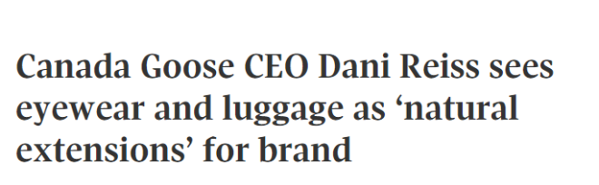
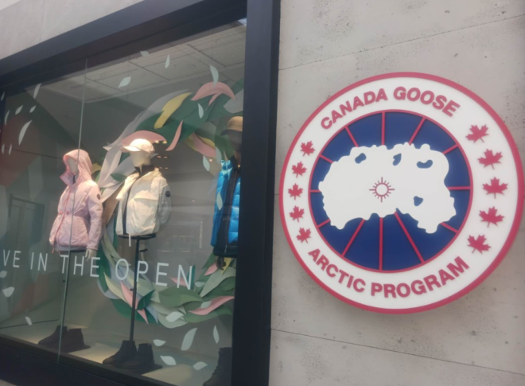

加拿大知名羽绒服品牌加拿大鹅（Canada Goose）在全球越来越受欢迎，这家总部位于多伦多的公司已经发展为一家奢侈品巨头，销售从运动鞋到风衣等各种商品。

Canada Goose行政总裁丹尼·瑞斯（Dani Reiss）表示，他们的下一个目标是——眼镜和行李箱！
“这些产品是理所当然的延伸，在适当的时间和地点，我们会涉足其中。”Reiss说道。

虽然Reiss表示公司尚未针对这些新类别制定详细计划，但他的言论无疑预示着Canada Goose未来的发展方向。
尽管Canada Goose的人气依然强劲，但整个零售业正在跟一些不利因素作斗争，这些因素已经迫使一些大公司（如Nordstrom）完全撤出加拿大，而Indigo、Mountain Equipment Co.和Wayfair等其他公司则遭到裁员。
Canada Goose也并非毫发无损，该公司在3月份裁掉了17%的全球公司员工。
与此同时，高通胀和高利率也使得消费者们不太愿意花钱购买这家公司以高价闻名的商品。
他们的羽绒服售价通常超过$1500加元，帽子售价$250加元，羽绒靴子售价为$695加元。
Reiss表示：“如今，我们正处于消费者面临宏观压力的时代。”
然而，他却依然保持乐观。
“无论存在什么压力，我认为我们品牌的实力和我们品牌相对于市场的规模……都是我们发展的更大动力。”他说。
Reiss表示他特别看好亚洲市场。
Canada Goose于6年前进入该市场，自那以后，其在亚洲的影响力稳步增长。其网站显示，它在中国大陆拥有18家门店，香港有2家，澳门和台北各有1家。
“我认为进展非常顺利，我们在中国拥有大量追随者，但我们仍然还有很长的路要走，”Reiss说。“在一个非常大的市场中，我们的规模还相对较小。”
该公司最近的收益显示，其第一季度在加拿大本土市场和中国的收入相同——$2190万加元。
虽然加拿大市场的收益较上
“在亚洲，我们有很大的发展空间，”Reiss说。
但这并不意味着加拿大市场不再有潜力，之后还会将重点放在Canada Goose最新的产品类别，以及运动装、鞋子、针织和风衣方面的创新。